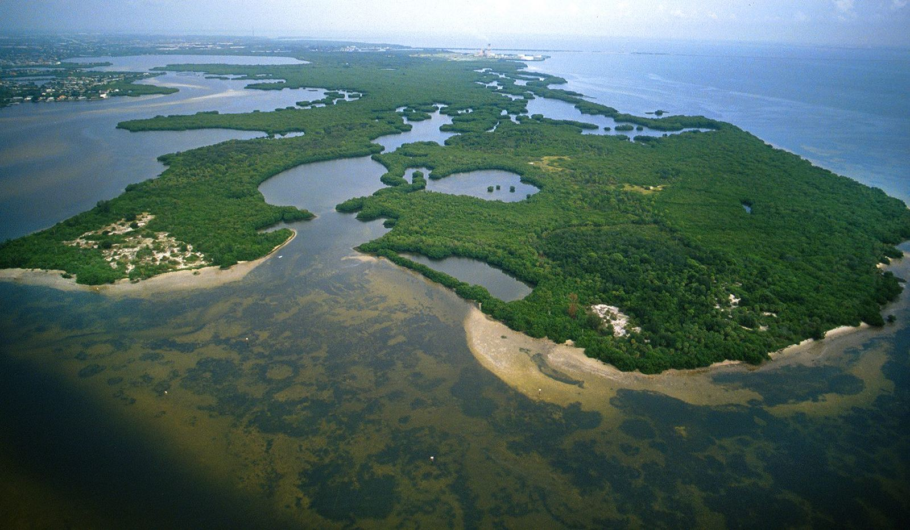
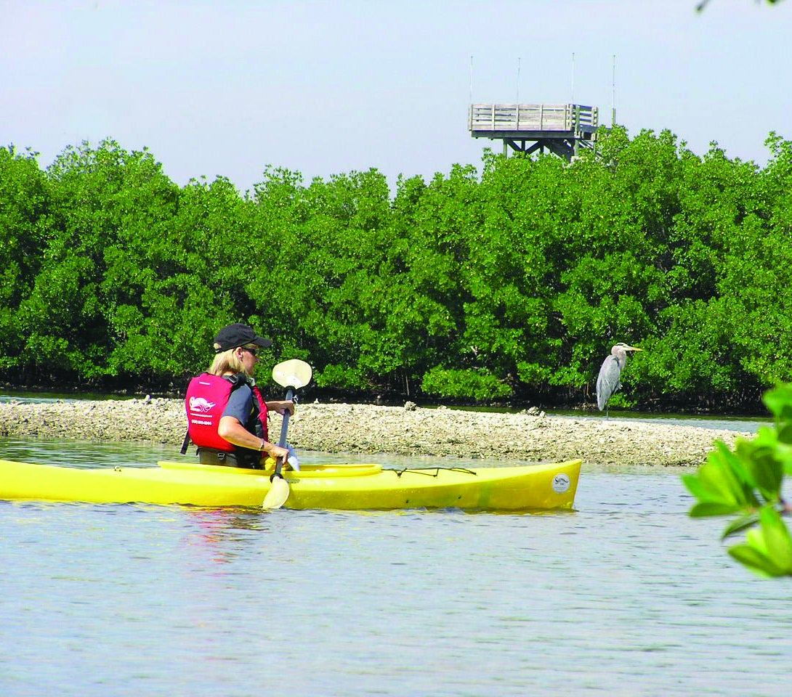
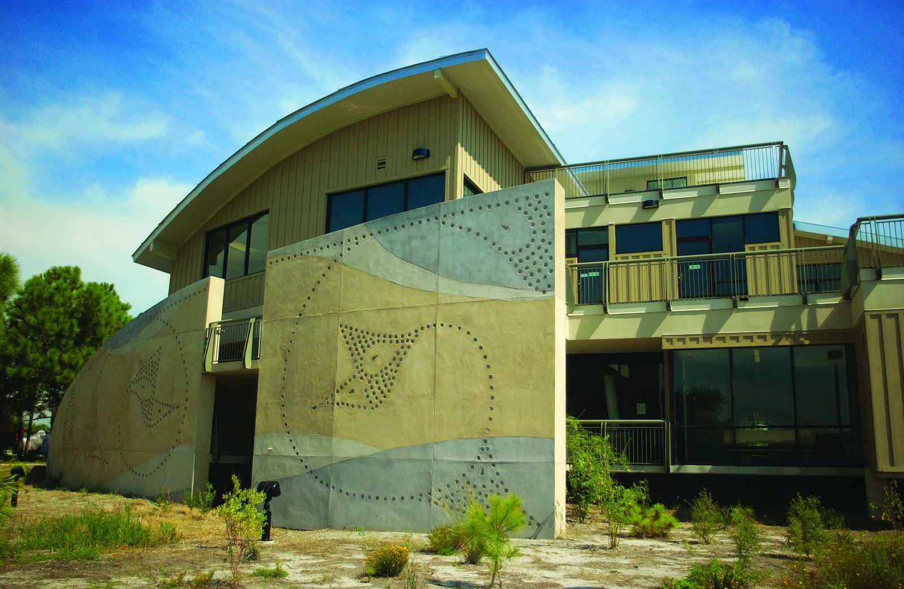
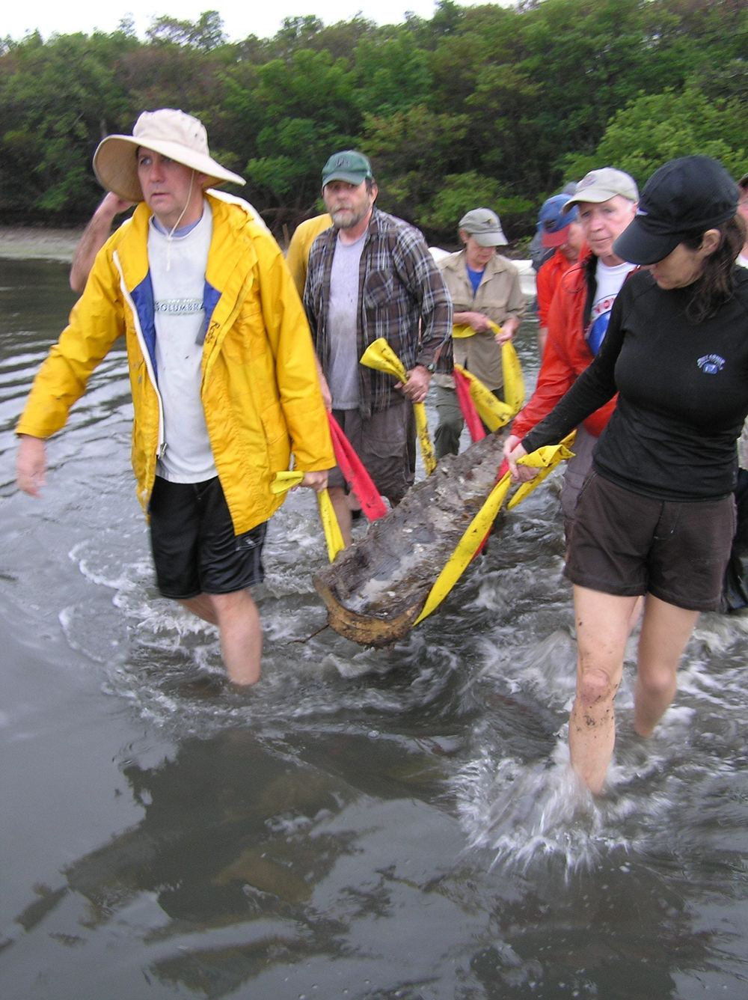
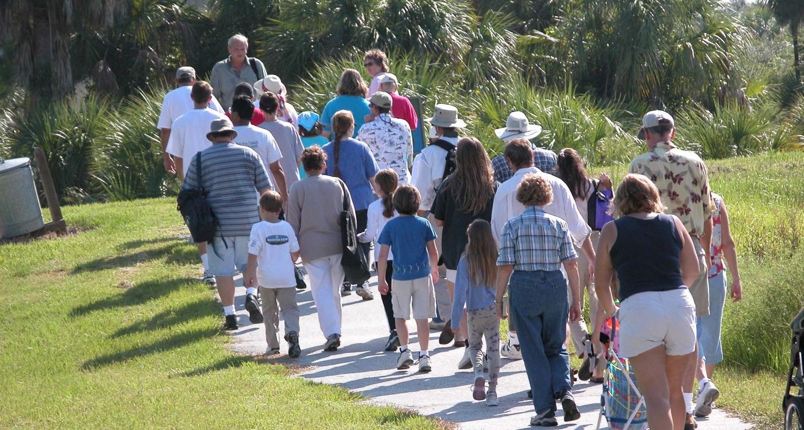
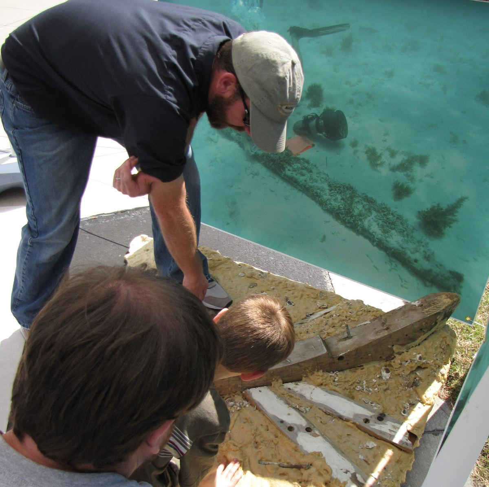

Weedon Island Preserve, St. Petersburg
3,195 acres of wild Florida on Old Tampa Bay.
Walk almost two miles of boardwalk and path through the mangroves, paddle a four-mile trail between the islands, and see a canoe carved more than a thousand years ago. Free to visit, every day.
Today at Weedon
Temporary closures are posted on the County's park updates page.
Coming up this month
Guided walks, talks and family days hosted at the Center. Most need advance registration.
Choose your way in
Over 4.7 miles of boardwalks and trails, a paddling trail, a fishing pier and 6,000 square feet of exhibits.

Walk the boardwalks
Almost two miles of accessible boardwalk and pavement, and a 45-foot tower with views to St. Petersburg and Tampa.

Paddle the islands
A four-mile loop through mangroves and seagrass flats.

Fish the pier
Sheepshead, jack and snook at the end of Weedon Drive NE.

Visit the Center
Exhibits that travel underwater, through the mangroves and back in time.

The longest dugout canoe ever found in Florida
A local resident spotted it in the preserve's shoreline in 2001. Archaeologists and volunteers excavated it in 2011. Radiocarbon testing dates it to between AD 690 and 1010, made by the Manasota people who hunted and fished this bay.
- 39.9 feetPine, measured from bow to broken stern
- SaltwaterThe only Florida dugout found in a saltwater setting
- 1,100 yearsOld, and now on view at the Center
- 2 partnersThe Friends of Weedon Island and AWIARE conserved it
Good to know before you go
The preserve is the only refuge for many native animals. These rules keep it that way.
- No pets, including dogs, cats and horses
- No alcohol or glass containers
- No bicycles on trails and boardwalks. Ride the paved entrance road and use the racks.
- No smoking or fireworks. Many plant communities here burn easily.
- Leave plants, animals and artifacts where you find them
Listen on the way in
Two short audio tours, recorded for the entrance road and the Center. Play them from your phone when you arrive.
Entrance audio tour
Center audio tour
Get the monthly newsletter
Classes, camps, events and preserve news from the Center, once a month.

Volunteer at the Center
Greet visitors as a docent, or lead trail tours from October through May. If you enjoy meeting people, learning about the environment or spending time outdoors, there's a role for you.
Ways to volunteer
Join the Friends of Weedon Island
Since 1992 the Friends have supported programs, events and projects at the preserve, including the tank that conserved the canoe.
Become a Friend